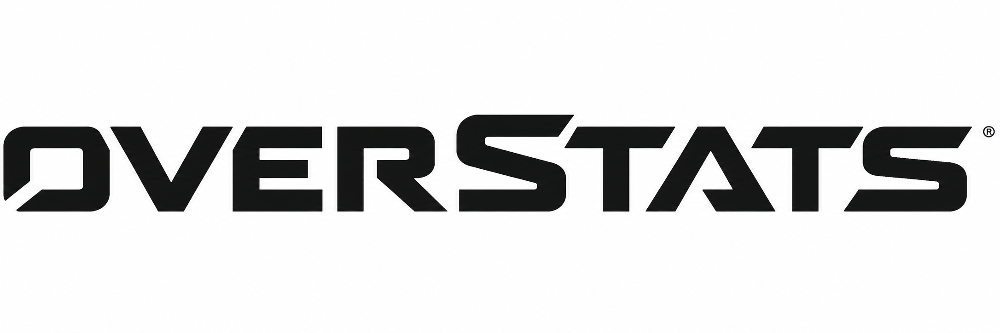

Olá,
usuário
!
Gráficos
Home
Sair
Top 5 partidas por KDA
KDA por herói
Herói mais utilizado
Sem dados
Herói tipo
com
partidas registradas
Média de eliminações por herói
% de acerto crítica por herói
Kills, mortes e assistências por herói